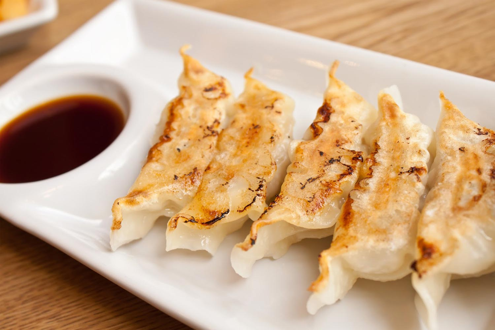
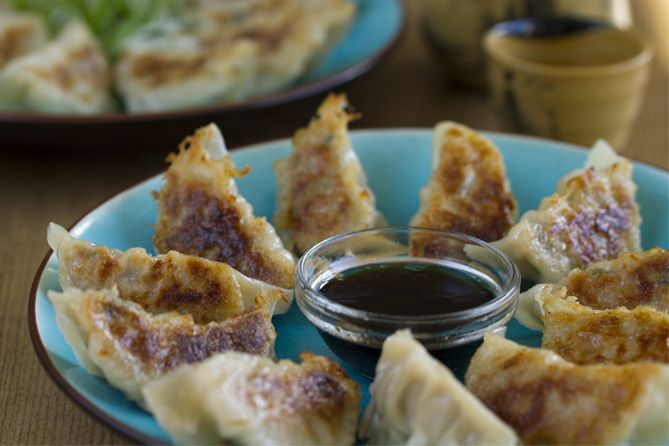
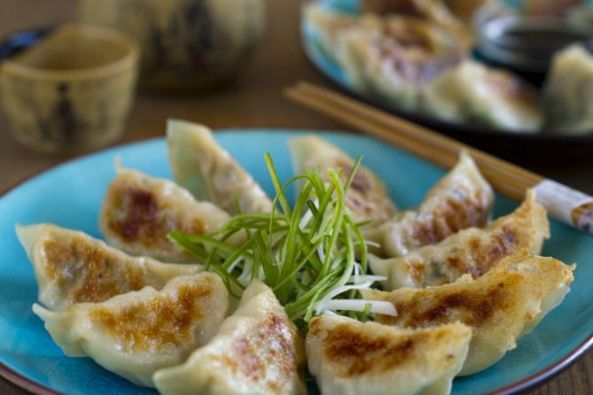

|
|
Gyoza o Empanadillas japonesas (versión fácil) |

Hoy os traigo una versión muy sencilla de Gyoza, un “dumpling” muy famoso de la gastronomía asiática, las Gyoza son la versión japonesa de las empanadillas Chinas, aunque existen distintas versiones, hoy quiero enseñaros a prepararlos en casa de una forma muy sencilla, con muy pocos ingredientes, además si no podéis conseguir la pasta para hacer los Gyoza, podéis hacerla de forma casera con la receta que os enseñé hace unos días (Como hacer pasta para Gyoza).
En ésta ocasión quería enseñaros una versión muy sencilla para que todo el mundo la pueda preparar en casa, en otra ocasión os prepararé una versión mucho más completa con distintos ingredientes. El relleno de los Gyoza puede variar bastante, yo los he preparado con cerdo picado, aunque también se puede usar pollo, ternera e incluso hacer la versión vegetariana usando tofu, verduras y setas.
¿Cómo se cocinan las “Gyozas”?
¿Cómo se cocinan las “Gyozas”?
El método más común de preparación de los Gyoza es en la sartén, es un proceso en el que primero se fríen, dejando la parte de la base tostada y crujiente, posteriormente se añade agua para que se cocine el relleno y la parte superior de los Gyoza. El aceite que usamos para freírlos, es aceite vegetal, posteriormente le ponemos un toque de aceite de sésamo que aromatiza y da un sabor muy característico a nuestras empanadillas.

Ingredientes para 2 personas:
- 1 paquete de láminas de pasta de gyozas
- 200 gr de arne picada
- Media col china
- 3 dientes de ajo
- 2 cucharadas de aceite de sésamo
- 2 cucharadas de salsa de soja
- 1 ajete entero picado
Elaboración:
- Picamos la cebolleta y la col china. Las reservamos para luego.
- En un bol ponemos el cerdo picado, el ajo, el jengibre, las salsa de soja, la sal, el azúcar, la maicena, el aceite de sésamo y lo mezclamos todo bien hasta que quede pegajoso.
- Añadimos la cebolleta y la col china y lo volvemos a mezclar.
- Lo cubrimos con un film y lo dejamos en la nevera unos 20 minutos.
- Para rellenar cogemos una pieza de pasta para Gyoza y en el centro ponemos una cucharadita de nuestro relleno, mojamos con los dedos la parte exterior de la pasta, la doblemos por la mitad y vamos cerrándola con los dedos. Yo hago desde la mitad, 3 pliegues a cada lado, aunque también podéis empezar a plegar por un lado y terminar en el otro. Para terminar, presionamos un poco los pliegues para que no se abran.
- Mientras vamos haciendo el resto, las ponemos en un plato y las cubrimos con un trapo húmedo para que no se sequen.
- Para cocinar, en una sartén extendemos un chorrito de aceite vegetal y ponemos nuestras gyozas. Cuando estén tostadas por la base, les añadimos un chorrito de aceite de sésamo y ponemos agua para cubrir bien todo el fondo. Yo además le añado a éste agua una cucharadita de maicena para que se forme una costra crujiente en la base.
- Tapamos la sartén y dejamos cocinar hasta que se evapore el agua, tardará entre 8 y 10 minutos.
- Mientras esperamos preparamos nuestra salsa, en un bol pequeño mezclamos la salsa de soja, el vinagre de arroz y un poco de aceite de sésamo, removemos bien y ya está lista.
- Una vez se ha evaporado el agua de la sartén, las gyozas quedarán tostadas y crujientes en la base y bien cocinadas pero más blanditas por arriba, las ponemos en un plato y ya están listas para comer, las acompañamos con nuestra salsa.